Chapter 4 was about the colour of the light. This one is about the colours in the scene and what they do to a picture. Colour is often the first thing people notice, long before they work out what a photo shows. It sets the mood and pulls the eye. It can hold a frame together or tear it apart. You don’t need a painter’s training to use it. A few ideas and the habit of looking go a long way.
Hue, saturation and brightness
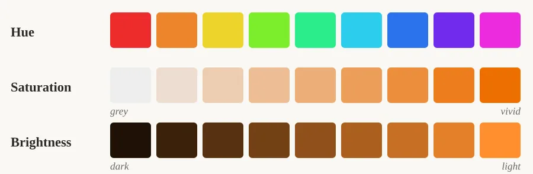
Hue is the colour itself, the thing we give a name. Red, orange, teal, violet. Saturation is how strong the colour is, from plain grey at zero to as intense as it gets. Brightness, which some programs call lightness or luminance, is how light or dark it is. A pale pink and a deep maroon share much the same hue. What separates them is saturation and brightness.
These words are worth learning because your editing program uses them. Most have a panel with a slider for each one, for every colour range, often labelled HSL. They help in the field too. Saying “the greens are too strong” gets you much further than “something looks off”.
The colour wheel
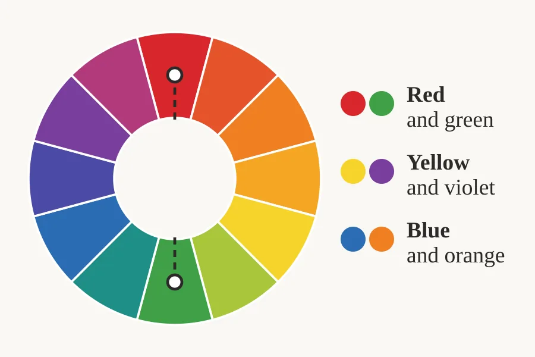
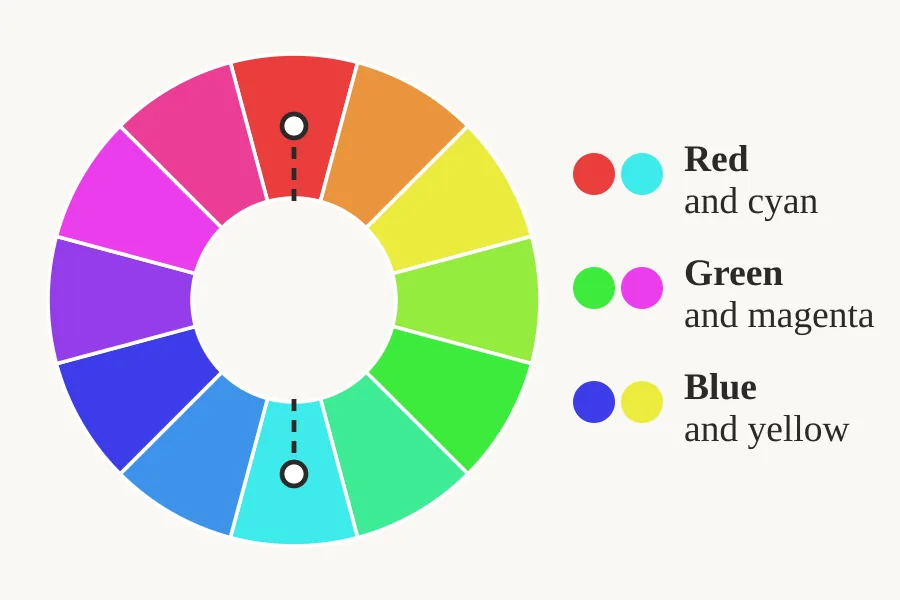
The colour wheel bends the rainbow into a circle, so neighbours in the rainbow stay neighbours on the wheel. You’ll meet two versions. Painters learn one built on red, yellow and blue, where red sits opposite green. Cameras, screens and editing programs work with light, and their wheel is built on red, green and blue. On that one red sits opposite cyan, and blue opposite yellow.
Most of the time the difference doesn’t matter much. Orange and blue face each other on both wheels, and that pair turns up everywhere, from sunsets over the sea to warm street lights in the blue hour. When you edit, though, think in light. To remove a colour cast you push towards its opposite. Too yellow? Add blue. Too green? Add magenta, which is exactly what the tint slider next to white balance does.
Colour schemes that work
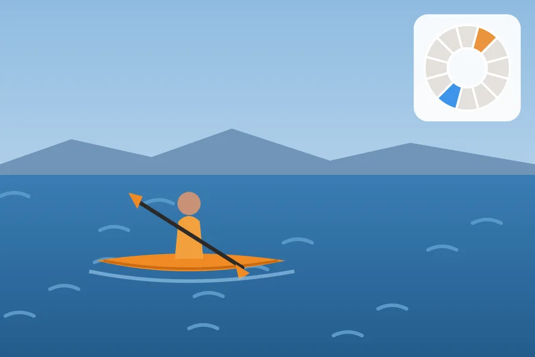
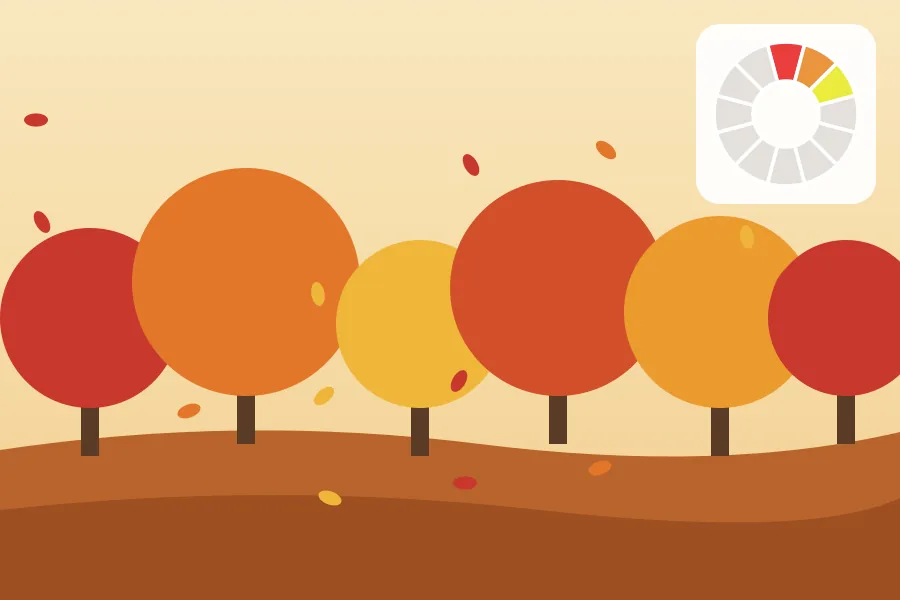
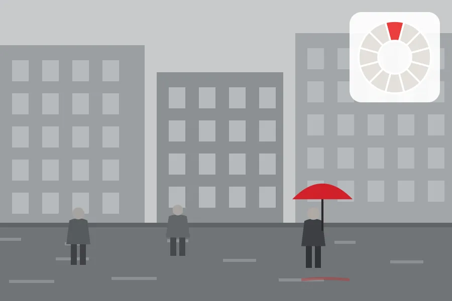
Complementary colours sit opposite each other on the wheel. Side by side, each makes the other look stronger, so the picture feels lively and a little tense. Think of an orange kayak on blue water or a yellow coat against a violet wall. Let one colour take up more of the frame than the other and the picture settles down. An even split can look like a flag.
Analogous colours sit next to each other, like the reds and oranges of autumn leaves or the greens and blue-greens of a forest stream. There’s little tension between them, so they feel calm and natural. Nature is full of these schemes, which is partly why they’re so easy on the eye.
A monochromatic picture uses a single hue in different strengths and brightnesses. Fog, snow, a city in the blue hour and a field of lavender all lean this way. With colour out of the argument, shape and texture carry the picture. It’s a good step towards seeing in black and white.
An accent is one small spot of strong colour in an otherwise quiet scene. A red umbrella on a grey street is the classic example. The eye goes straight to it, so put it where you want the viewer to look, often on a third. One accent is plenty. A second one starts an argument.
Warm, cool and mood
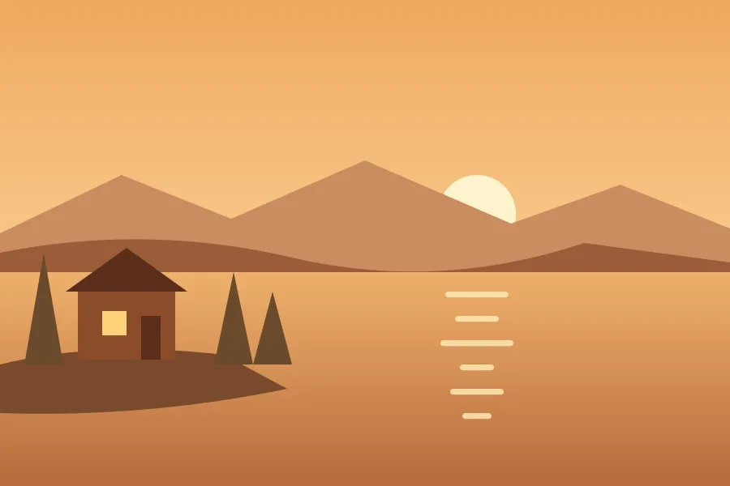
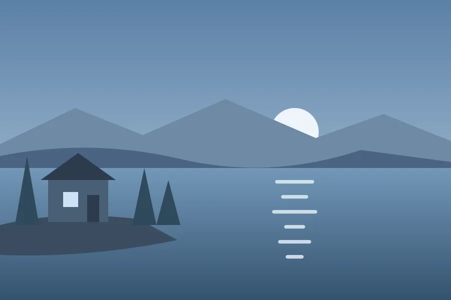
Reds and oranges feel warm. Blues and blue-greens feel cool. Warm colours seem to come towards you and suggest energy and comfort, the glow of a kitchen or a fire. Cool colours seem to step back. They read as calm or fresh, sometimes distant, sometimes lonely.
You can use this on purpose. A slightly warm white balance makes a portrait feel friendly, and a cooler one suits a winter street or a misty morning. Mixing the two is where it gets interesting. A warm face in front of a cool background stands out by itself, which is why so many films colour their shadows teal and keep skin tones warm.
Colour pulls the eye
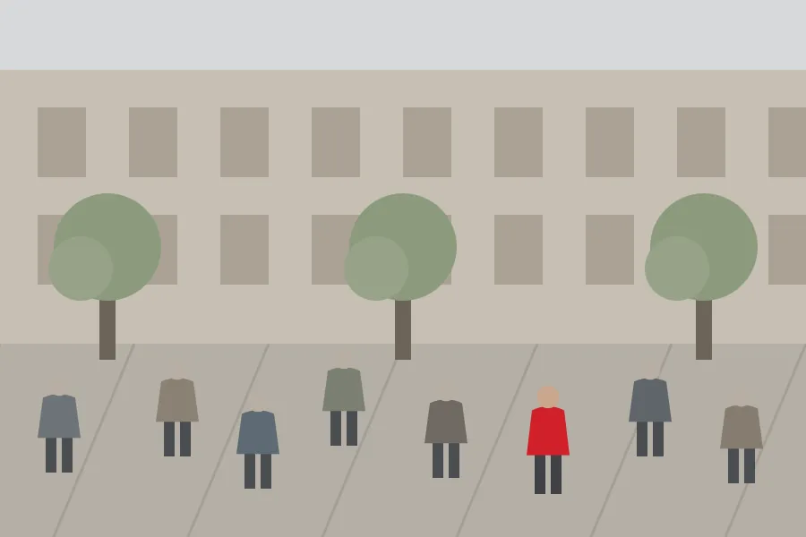
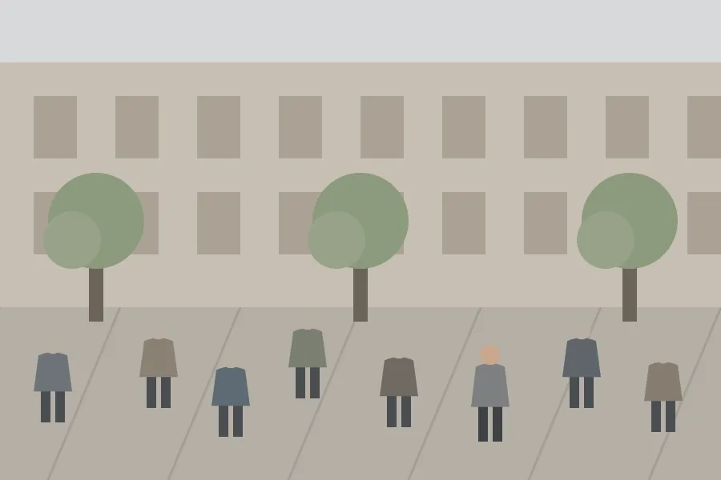
Colours don’t all carry the same weight. Strong, warm colours grab attention before muted or cool ones, and red is the loudest of them all. A small red sign at the edge of the frame can drag the eye away from the subject in the middle, even if you never noticed the sign when you pressed the shutter.
So check the edges for stray bright colours, the same way you check for bright highlights. Take a step to the side, or wait for the person in the yellow jacket to walk out of the frame. In editing you can calm one colour that pulls too hard with its own saturation slider. And sometimes the answer is to take colour away altogether. If the colours fight and nothing fixes it, try the picture in black and white, as chapter 13 shows.
Saturation and vibrance
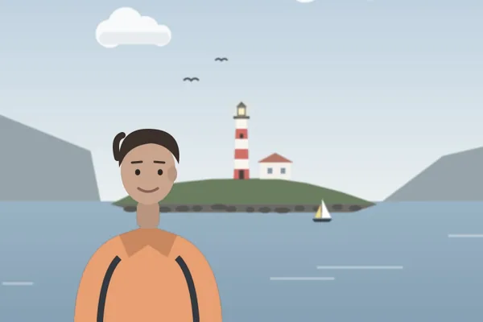
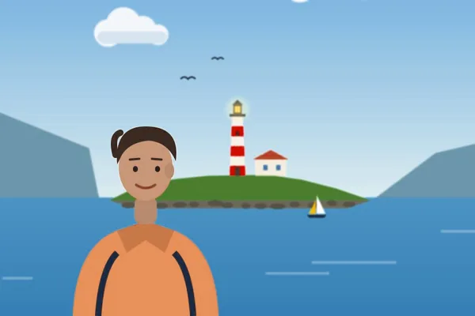
Most editing programs have two sliders for the strength of colour. Saturation raises every colour by the same amount. Push it hard and skin turns orange while the sky goes electric, and the picture starts to look cheap. Vibrance is gentler. It lifts muted colours more than strong ones, and most programs hold back on skin tones while they do it. With people in the picture, reach for vibrance first.
Colours look stronger on a bright screen than on paper. They also look weaker to you after an hour of editing, because your eyes get used to them. Look at the picture again the next day before you push the colour any further. A light touch nearly always ages better.
Colour grading

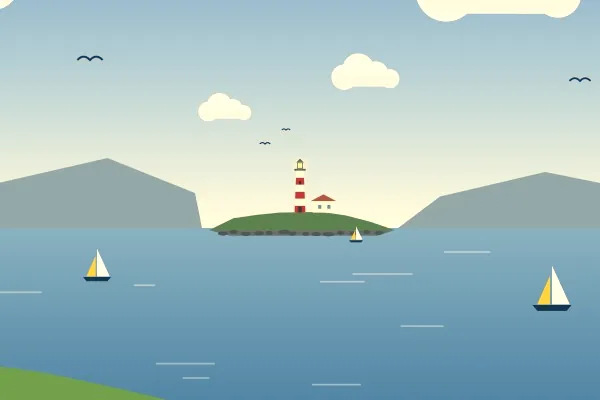
Colour grading means giving the whole picture a colour mood rather than just correcting it. The simplest version tints the shadows one way and the highlights another, very often cool shadows and warm highlights. Look for a panel called colour grading or split toning, with a small colour wheel for each range of tones. Go gently. A good grade feels like the light on the day, not like a filter laid over the top.
Grading works best when it builds on colours that are already in the scene. Warm up a sunset a touch, or cool down a snowy morning. Fighting the light rarely works. If you grade a series, use the same settings on every picture so they hang together.
Exercises
Exercises T1–T4. Tick each one off when you’ve tried it. Your ticks stay on this phone or computer.
- T1
Colour hunt
Choose one colour and spend an hour photographing only things in that colour. Put your best nine together as a grid.
- T2
Opposites
Find complementary colours side by side, like orange and blue or yellow and violet. Make four pictures where one colour clearly takes up more of the frame than the other.
- T3
One accent
Photograph a quiet, muted scene with one small spot of strong colour. Try the accent in different places in the frame and compare.
- T4
Saturation or vibrance
Edit one portrait twice, once with saturation +50 and once with vibrance +50. Compare the skin and the sky, then pick the version you’d print.
Photography Handbook, © 2026 Samskara Photo Club. Text and illustrations are licensed under CC BY-NC-SA 4.0. You may share and adapt them for non-commercial use if you credit the club and share your version under the same licence. Commercial use needs the club’s permission. The club logo is not covered by the licence.